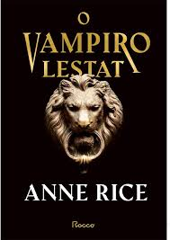

Esse livro escrito pelo filósofo, escritor, professor, historiador brasileiro Leandro Karnal traz uma perspectiva niilista positiva da vida, onde ele explica que apesar das dificuldades, problemas e obstáculos da vida, devemos sempre buscar a esperança na forma de viver, tendo a coragem de sempre seguir em frente em meio a situações difíceis da vida, sempre persistindo não importa o quão difícil ficar. Assim, com base nessa mentalidade também entendendo que nem sempre a vida nos favorecerá e que o mundo não "gira ao nosso redor". É recomendado para aqueles que curtem livros reflexivos, de auto-ajuda e filósoficos.

Já esse livro que é o segundo livro da saga "Crônicas Vampirescas" traz escrito pela escritora de livros de terror e fantasia americana Anne Rice conta a do antigo e poderoso vampiro que possui 263 anos de idade e suas aventuras nessa saga. Traz momentos de humor, seriedade, suspense, terror, drama e até mesmo romance em um só livro. Para aqueles interessados em livros de fantasia sombria, "O Vampiro Lestat" é uma ótima opção junto a saga "Crônicas Vampirescas".